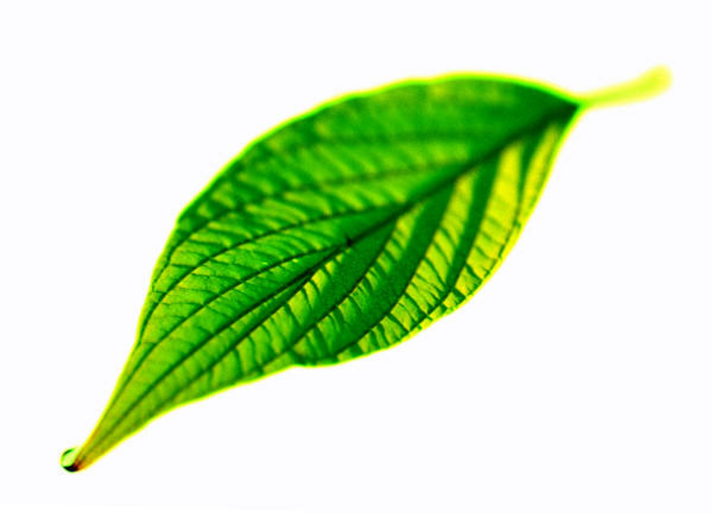
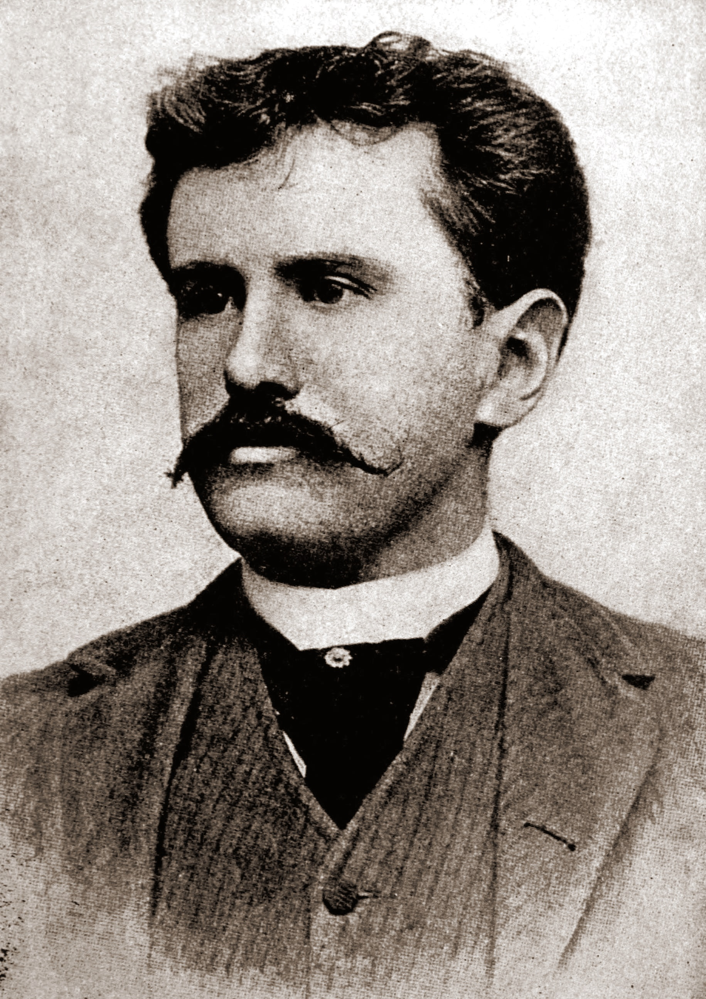

Chiếc lá cuối cùng
Chiếc lá cuối cùng (The Last Leaf) là một trong những truyện ngắn hay của nhà văn nổi tiếng người Mỹ O.Henry
Tóm tắt nội dung

Sue (phiên âm : Xiu) và Johnsy (phiên âm: Giôn-xi) là 2 nữ họa sĩ trẻ sống trong 1 khu nhà trọ. Cụ Behrman (phiên âm: Bơ-men) là một họa sĩ già cũng sống ở đó; cả đời cụ khao khát vẽ được một kiệt tác nhưng chưa thực hiện được Mùa đông năm ấy, Johnsy bị bệnh sưng phổi rất nặng. Bệnh tật và nghèo túng khiến cô tuyệt vọng không muốn sống nữa và nghĩ rằng khi chiếc lá thường xuân cuối cùng rụng xuống sẽ là lúc mình lìa đời. Sue vô cùng lo lắng và hết lòng chạy chữa cho bạn nhưng vô ích. Biết được ý nghĩ điên rồ của Johnsy, cụ Behram âm thầm thức suốt đêm mưa gió để vẽ chiếc lá thường xuân. Chiếc lá cuối cùng không rụng trong đêm bão lớn khiến Johnsy nghĩ lại, cô hy vọng và muốn được sống. Tuy nhiên, cụ Behram lãi chết vì bị sương phổi sau một đêm đội mưa gió để vẽ hình chiếc chiếc lá cuối cùng lên tường nhằm cứu Johnsy. Sau khu Sue thông báo Johnsy đã thoát nguy hiểm, cô lặng lẽ đến bên bạn báo cho bạn về cái chết của cụ Behrman và bí mật chiếc lá cuối cùng.